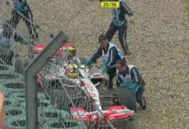
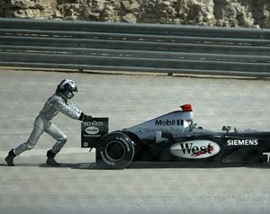
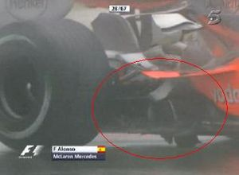
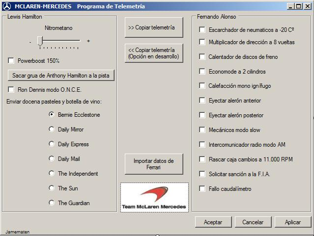
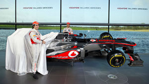
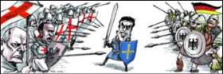
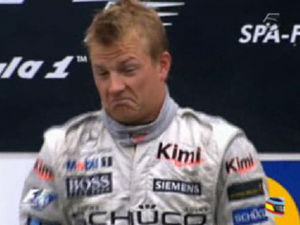
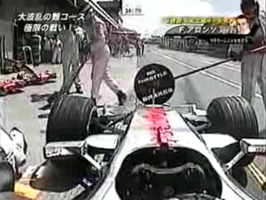
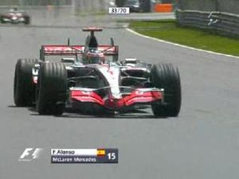

McLata-Honda
 De: La Frikipedia, la enciclopedia extremadamente seria.
De: La Frikipedia, la enciclopedia extremadamente seria.
«¡Eso no es cierto! Nosotros no calcamos un Ferrari; vale que el motor, la parte aerodinámica, la telemetría, etc. sean iguales... ¡Pero las pegatinas son distintas!»
~ Ron Dennis defendiéndose de la prensa interprovincialnacional
«¡Este equipo es una puta mierda! ¡No aguanto más!»
~ Frenando Alonso en su etapa en McLata
«Venga chicos, quiero que os curréis ese caballo negro para el escudo, que os quede idéntico... pero añadidle un "hula hoop" y ponedlo tocando la zambomba. ¡Ah! Y en vez de negro, que tenga la bandera gay y un garfio en una pata... ¡No, no! Añadidle también un sombrero y que sostenga en una mano una taza de chocolate con churros. El resto lo dejo a vuestra elección»
~ Ron Dennis indicando a sus subordinados sus preferencias para la decoración del coche
«Kimi Räikkönen es un piloto con mala suerte. Yo lo he vivido en McLaten: Las cosas que jamás nos habían pasado, que eran imposibles que nos pasaran, le pasaban en plena carrera o en plenos entrenamientos oficiales. No es mala suerte, es muy mala suerte»
~ De la Rosa sobre el gafe de Kimi Räikkönen
«Nosotros no estábamos corriendo contra Kimi, nosotros estábamos corriendo básicamente contra Fernando»
~ Cacique Dennis sobre el GP de China 2007, por si a alguien le quedaban dudas...
«Nunca le he preguntado a Fernando si cuando fichó por el equipo de Ron Dennis le aseguraron que iba a ser el número uno de la escudería. Si él no lo preguntó y tampoco se lo dijeron, supongo que dio por hecho que era así, porque teniendo como compañero a un piloto novato en la F1, es lógico que así lo esperara. Alonso debería haber sido el número uno y está claro que no lo fue»
~ Bernie Ecclestone dejando las cosas claras
«Creo que Fernando es inmensamente competitivo y siempre busca una ventaja. Es cierto que nos ha aportado mucho. Es un gran, gran piloto»
~ Martin Whitmarsh confesando que McLata y Luisito no se hubieran comido una mierda en 2008 sin Alonso
«Me arrepiento inmensamente de haber perdido a Alonso y de no haber hecho funcionar las cosas en el modo correcto. Todos contribuimos con una serie de errores. Tuvimos que vencer el Mundial de 2007 y en cambio rompimos la relación. La culpa es difícil que sea de una parte. Fernando es decidido y competitivo, justo como Lewis. Nos encontramos en una encrucijada que no supimos gestionar como equipo»
~ Martin Whitmarsh confesando la gran cagada de su equipo en un ataque de sinceridad
«Todo McLaren gira en torno a Hamilton»
~ De la Rosa sobre la devoción del equipo hacia Hamiltongo, por si a alguien le quedaban dudas...
«Ferrari ganó con su estilo, eso no es algo nuevo»
~ Martin Whitmarsh sobre las órdenes de equipo (también usadas por ellos, evidentemente)
«¡Este coche es una puta mierda! ¡Es todo! ¡Me piro de aquí!»
~ Sergio Pérez en su etapa en McLata, al igual que otro que conozco

Monoplaza de McLata-Mercedes en acción, destaca por su color de aluminio.
McLata-Honda (antes McLata-Mercedes) es una scudería de Fórmula 1 asociada con el McDonald's y conocida por sus trampas, chanchullos, favoritismos, enchufismos, etc. escándalos políticos en todo el mundo (algo que no impide que acusen a sus rivales de hacer trampas, como Red Mul). También es conocida como McLaten Mercedes, FuckLaren Mierdeces, McDonald's Trampeces, McGuarren Mierdeces, McLaten Percebes, McParen Herejes, McLata Hundidos, McParen Tonta... o incluso Iglesia Hamiltoniana.
San Ganchao hizo justicia dejándoles sin nada en 2007. Añito en blanco por su estupidez y horrible gestión desde los despachos.
Historia

Los McLata son buenos hasta rompiéndose.
Fundóse en el año de la lagartija según el horóscopo chino, cuando un piloto llamdo Bruce con cara de primate con hemorroides en el ano, se le ocurrió hacer un equipo de coches de éstos que van ostiaos para competir contra Scuderia Fesuciarri. Como tenía los bolsillos más pelaos que un "vagamundo" y menos ideas que un Tamagochi, acudió a los Reyes Católicos a que le pagasen el proyecto pa ir a América Ford para que le cediesen el nombre a la escudería en sus inicios.
En 1970 Bruce trató de probar la resistencia de su nuevo coche y lo comprobó dándose el tortazo del siglo, muriendo arrastrado en la pista y dejando muy tristes a los mecánicos, que siguieron trabajando para destruir mas coches intentar a conseguir el campeonato del mundo. Lo lograron en 1974 con Emerson Fittipaldi y en 1976 casi matando a Niki Lauda para que lo consiguiera James Hunt, pero luego no se comerían un rosco hasta 1984, cuando el mismo Niki logró el campeonato por 0,5 puntos (no es coña) sobre Alain Prost, que era del mismo equipo, para seguir con más éxito robaron a Güilliams los motores Honda y contrataron al Dios más grande de todos, Ayrton Senna, para 1988, quien ganó el título por sobre el gabacho y riéndose del resto al ganar 15 de 16 carreras posibles. En 1989 fue Prost quien ganó después de que Senna fuera descalificado por ser empujado en la pista y cortar la chicane, tras esto Prost se piró a Perrari; en 1990, también en Japón, Senna decidió echar de la pista amablemente para ganar el campeonato y en 1991 fue más de lo mismo. Pero Hundidos se marchó y Dios al volante, viendo que no funcionaban las cosas, también decidió irse.
Volverían a pasar varios años sin comerse una puta mierda hasta 1998 cuando decidieron cambiar a neumáticos Brigestone y reventar el Goodyear de Michael Schumacher, para lograr un título con Mickey en el 98, y en el 99 decidieron secuestrar al Kaiser un tiempo para ganar nuevamente el título de pilotos, ya tenían los motores Mierdeces y con el paso al nuevo milenio estos se empezaron a romper hasta con solo mirarlos, teniendo muchas veces unos de los mejores autos de la parrilla con el diseñador estrella Adrian Newey pero perdiendo títulos que si no fueran por estas averías hubiesen ganado. En 2007 decidieron contratar a Frenando Al Fondo y a un niñato para acabar regalando un mundial que ya tenían comprado.
El 2008 logran ganar un título (regalado gracias a la inutilidad de sus rivales) de pilotos tras 9 años de sequía con Lewis Hamilton y de ahí en adelante no han ganado un pimiento por los mismos problemas de motor y las cagadas de los pilotos que hacen el domingo cada carrera, echando por la borda el potencial del monoplaza, y así les va.
Características
Vaclaren es y será siempre reconocida por sus grandes méritos en el mundillo éste de la F1:
- Mayor número de coches destrozados y accidentes sufridos (con Räikköñen). Hamiltonto va camino de superarlo, aunque se empeñen en defenderle [1].
- Fotocopiar fallidamente un dossier
más gordo que el jodío El Quijote muy extenso sobre los Perrari.
- Más que dudosos favoritismos con algunos de sus pilotos (como éste).
- De acuerdo con lo anterior, putear al otro piloto (como éste).
- En contradicción con lo anterior, asegurar que siempre tratan a sus pilotos con igualdad.
- Dar la nota en los medios de comunicación.
- Cultivar fresas radioactivas.
- Tildar de enemigo a Frenando Alonso (cuando es uno de sus pilotos).
- Regalar Mundiales a Ferrari.
- Ser sancionados por tramposos.
Pilotos famosos de esta escudería
 Y, cómo no, también van bien por la arena
En esta escudería, sus pilotos pueden dividirse en dos tipos: los que han sido beneficiados por la política de "igualdad de trato" del equipo y los que no lo han sido [2].
Pilotos beneficiados
 En McLata son tan listos que hasta inventaron un nuevo motor de propulsión.
- Ayrton Senna: Magic compitió con la escudería de Ron Dennis en los años 80 y principios del 90, con la que logró sus tres mundiales. Probablemente es el piloto más famoso y laureado de esta escudería, que además siempre será recordado por sus innumerables
hostias piques con Alain Prost.
- Mika Häkkinen: El finlandés volador, el auténtico hombre de hielo o "Iceman" de McLata y líder indiscutible del equipo durante finales de los 90. Forjó una gran relación
sepsual con Ron Dennis y ganó dos mundiales de potra en competencia directa con Chumájer allá por los años 1998 y 1999.
- Kimi Räikkönen: Al principio pensaron que era el sucesor natural de Häkkinen en McCaquen y decidieron que fuera el nuevo líder del equipo, pero posteriormente se comprobó que este hombre tan sólo servía para impedir que sus rivales acabasen (en el supuesto de que lograse empotrarse contra ellos en uno sus múltiples accidentes), para conseguir
inútiles vueltas rápidas y para dar espectáculo reventando motores. Por lo tanto, se optó por empaquetárselo a Ferrari con un bonito lazo rosa. Kimi se vengó de Ron Dennis ganando el mundial 2007 con Perrari y riéndose de McLata mientras se tomaba un whisky.
- Lewis Hamilton: Aunque este hombrecillo no necesita presentación en el mundo de la Fórmula 1 actual, conviene recordar que fue el niño mimado de Ron Dennis y de todo el equipo McGuarren, por lo que todo piloto que iba a esta escudería tenía que estar dispuesto a ser su
esclavo ayudante, como Kovalainen.
Pilotos perjudicados
- Alain Prost: Compitió y ganó mundiales con este equipo durante los años 80, hasta que tuvo que competir con Senna; y tras el trato de favor que Ron Dennis le daba a Ayrton, dándole el mejor coche y permitiéndole hacer de todo, Alain se marchó a Ferrari (¿No os suena esta historia?).
- David Coulthard: Uno de los pilotos más pringaos en la historia de la escudería, junto con Alonso y Prost, tuvo que soportar como McParen le daba dos veces de lado, primero con Häkkinen y posteriormente con Räikköñen durante 9 largos años. Lógicamente, también acabó hasta los huevos y se largó a Orina de Chuck Norris.
- Juan Pablo Montoya: Según sus propias palabras, "Mi relación con Dennis era nula, ni siquiera nos hablábamos. El coche me condujo al aburrimiento. Se hicieron muchos cambios y hubo muchos fallos. Estar luchando por quintos puestos no es divertido". No hace falta decir nada más.
- Frenando Alonso: Sí, de la manera que todos recordamos y más de uno quiere olvidar, Puto Amo pasó por esta escudería para lograr su tercer mundial; pero al comprobar que sólo le querían para cederle sus reglajes a Hamiltongo y evolucionar el coche (vamos, humillarle), salió por patas de allí, no sin antes mofarse en su cara cuando perdieron los dos títulos.
- Heikki Kovalainen: Llegó al equipo
tramposo británico gracias a su juventud y la pasión de Ron Dennis por los finlandeses. Kovalainen estaba harto de la lentitud de Penault y se creyó que le dejarían competir contra Luisito (menudo idiota). Llegaron empatados a puntos a la cuarta carrera en 2008, pero a partir de ahí, Heikki comprobó que su papel sería el de lameculos ayudante de Jaimito tras un sinfín de sospechosas averías y curiosos accidentes [3]. Sin embargo, su rendimiento fue tan triste que le echaron a finales de 2009.
- Pedro Martínez de la Rosa: Siempre ha sido tratado como un segundón y un piloto de pruebas (por ejemplo, en la pretemporada de 2008 le hicieron trabajar a saco con el coche con la premisa de ser piloto titular) pese a ser el que ha hecho posible que McLata haya podido poner más de una vez un coche competitivo en pista, algo que nunca podrán agradecerle lo suficiente (y no porque no puedan, sino porque no quieren). Y a pesar de ello, Pedro, de forma incomprensible, seguía esperando un asiento para correr en este equipo...
- Jenson Button: Este menda llegó a las flechas plateadas tras ganar el título con Maquinillas de afeitar GP. Pasó de ser el Schumi de su antiguo equipo a convertirse en el siervo de Jaimito. Su etapa en la escudería se resumen en lo de "Save fuel".

Pilotos titulares del
2007.
Los pilotos de McParen suelen llevarse muy bien.
 Futesas, como podéis ver.
Con la llegada de PutoAmo a McLata en la temporada 2007, parecía que esta escudería iba a lograr resurgir de una vez tras haber coshechado unas últimas temporadas de mierda bastante discretas en la Fórmula 1. No obstante, una serie de sucesos protagonizados por estos personajes hicieron que lo que podría haber sido un primer año triunfal acabara siendo un ridículo monumental:
- Frenando Alonso: Primer piloto del equipo (al menos en teoría). Solía ser
estafao y pasao por la piedra técnicamente menos beneficiado que su enchufado compañero de equipo, Luisito, a pesar de ser él quien trabajó en poner a punto el MP4-22.
- Lewis Hamilton: Segundo piloto, que tendría que haber sido Pe-pedro y no él. Es (y aún sigue siendo) claramente mimado por el Tiíto Dennis, mandamás de McLata, y los de la (MA)FIA.
- El papi de Hamilton: Un chupacámaras que compaña a su hijito a todas las carreras, le limpia los mocos, le cambia el pañal y de vez en cuando le echa una manita, como cuando lo devolvió a la pista con la grúa.
- Pedro Martínez de la Rosa: Gran personaje que tendría que aspirar a semidiós por aguantar el chaparrón y comerse él solito el marrón de tener a Frenando en su "equipo". Afirmaba ante el gran e imponente Calvo de Antena 3 odiar a Luisito y amar cuanto menos a Ferni; esto lo hace pa que no se ponga a llorar Lobato, y es como poco mentira ya que se le notaba muy jodío por estar en el banquillo y debía de usar un muñeco de Alonso como Puching-Ball.
- Títo Dennis: Hermano de Ronald McDonald. Dueño y señor de la Lata, arrepentido de fichar a Alonso y mosqueao porque los Perrari son mejores que sus Latas de berberechos incluso habiéndolas calcao. Suele llorar por no tener dinero para pagar sanciones a la FIA y por tener cara de zoófilo. Se lava la cabeza con champú Johnson's Baby, para que le deje la calva tan suave... que compita con la de un bebé.
La visión de un gran periodista
Programa de Telemetría de McLata
 Vista funcional del programa de Telemetría
Temporada 2013: Su nuevo coche de supermercado
 Presentación de su nuevo
truño MP4-28
Después de haber tenido un gran coche en 2012 pero no haberlo podido aprovechar para ganar el mundial por varios errores, en 2013 meten la pata hasta el fondo al intentar mejorar su monoplaza con un diseño revolucionario. El resultado es que les sale una carraca con la que como mucho pueden conseguir algunos puntos y terminan sin conseguir un solo podio.
Temporada 2014: Su otro nuevo coche de supermercado
Empiezan la temporada con pie derecho al meter a sus dos pilotos en el cajón en Australia, pero esto fue sólo un espejismo, porque en las siguientes carreras el coche siguió siendo tan penoso como el del año pasado, llegando incluso a encadenar 3 carreras sin puntuar. Al llegar a Europa parece que el coche mejora un poco, ya que Button termina 4° en Gran Bretaña con Magnussen 7°, en Alemania puntuan con ambos coches (eso pese a la hostia del Magnum con La Massa), y en la lluvia de Hungría, El Botones pudo haber ganado de no ser por un fallo estratégico.
En 2015, Frenando Alonso vuelve a correr para McLata, que usa los motores Honda. Pero estos nuevos propulsores resultan ser un fiasco, al menos de momento, ya que se rompen a los 10 segundos de funcionamiento, y cuando no lo hacen, van tan lentos que tampoco pueden rascar nada positivo. Por fin, en Mónaco (circuito donde no se puede adelantar), Jenson Button obra el milagro de terminar la carrera en 8º puesto y sumar así los primeros puntos del año. Luego, El hombre sin cuello también estrena su casillero de puntos en Silverstone. El equipo logró su mejor resultado en Hungría, otro circuito donde es muy difícil adelantar, con un 5º y un 9º gracias a que hubo tropecientos incidentes y sanciones. Finalmente, terminaron en 9º puesto en el campeonato, lo que supone la peor temporada de su historia.
Logros recientes
 Año infernal pero magistralmente llevado por el
Nano. Olé sus
cojones.

¿Le tendrán restringido el acceso a un
F1 tras el ridículo?
Plantilla
- Jefe de equipo: Erizo Bolero (aunque Dennis aún anda por ahí...).
- Director técnico: Tim Goss (Timado Goss).
- Director adjunto: Neil Oatley.
- Ingenieros de carrera: Tom Stallard y Mark Temple.
- Pilotos titulares: El putón y Frenando Afondo.
- Pilotos de pruebas: Oliver Turvey (Olivar Turbado), Estofado Vandormido.
¿Sabías que...?
 Piloto de McLata demostrando su felicidad tras ganar.
 Los mecánicos, pasando de
Alonso en su repostaje.
 Aquí vemos a
Alonso yendo 15º después de la anterior parada.
- ...McLata ha llevado varios motores además de los actuales Percebes, como los Honda o Cosworth?
- ...la sanción que tuvo McLata en la temporada 2007 no fue por tener el coche calcao a Perrari sino por copiar el nombre de una hamburguesa del McDonald's?
- ...nadie sabe de que está hecho y relleno un McLata? (hay cosas que es mejor que el hombre no sepa)
- ...a pesar de que Ron Dennis ya ha abandonado la dirección de McLata, eso no ha acabado con el enchufismo hacia Hamiltongo?
- ...la prensa inglesa juraba y perjuraba durante 2009 que Hamilton se marcharía a Brawn GP?
- ...McDonald's proporciona la comida para los pilotos de McLata?
- ...el coche del segundo piloto de McLata (Alonso, Kovalainen, Coulthard, Prost...) sufre constantes
sabotajes desafortunadas averías?
- ...a pesar de ello, el récord absoluto de siniestros en McLata lo tiene Kimi Räikkönen?
- ...Hamiltonto va camino de superarlo?
- ...los miembros de esta escudería hacen lo que les mande Hamiltongo?
- ...lo anterior incluye cosas como limiparle las botas?
- ...si Luisito acaba por detrás de su compañero, se queja de la estrategia del equipo?
- ...sus coches utlizan salsas de McDonald's como combustible?
- ...los coches de McLata son más pesados que el Empire State?
- ...los mecánicos de McLata trabajaban reparando podadoras de césped antes de trabajar en McLata?
- ...perdieron un doblete en la última vuelta [6]?
- ...McLata diseña unas grandes estrategias de repostajes como esta?
- ...el mecánico que llegó tarde con la rueda de Hamilton en Valencia 2009 fue despedido nada más acabar la carrera después de que Anthony Hamilton se cabreara con él? [7]
- ...este equipo sigue la "Doctrina Hamilton" [8] [9]?
- ...el siguiente en sufrirla será Jenson Button, que no sabe dónde se ha metido?
- ...según el Traductor de Google, "Martin Whitmarsh" significa "Martín Pizca Pantano" [10]?
- ...quieren volver a fichar a Frenando Alonso?
- ...tienen un presupuesto de unos 220 millones de leros?
- ...van a volver a fichar a Frenando Alonso?
Véase también
Enlaces externos
Autor(es):
- Nexo
- EmuAGR
- MURO DE AGUAS
- Viento
- Grunt
- Azulejos
- Jebimetal
- Conan
- Cesarnirvanero
- Felimon
Frikipedia 2005-2016, Licencia
GFDL 1.2 - Extraído por FrikiLeaks